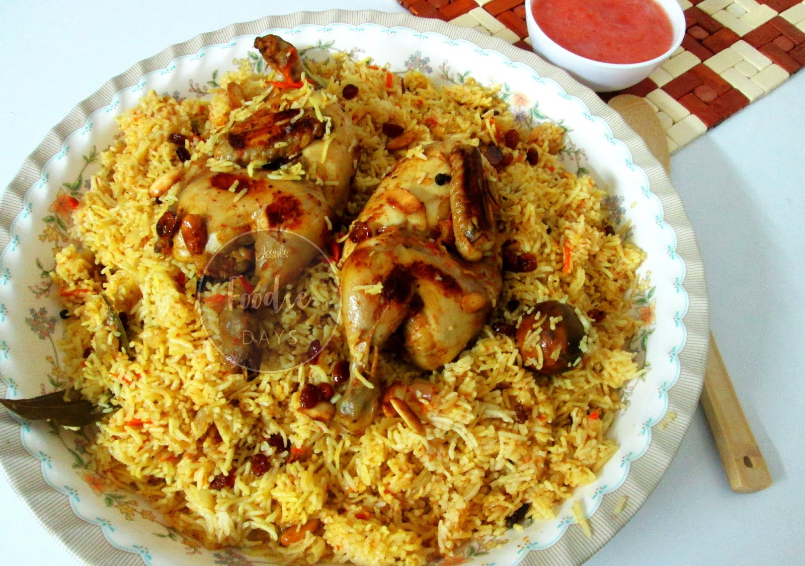

Al Kabsa
This was the first Arabic dish I ever made and it turned out extremely delicious,
a new favorite! Serve Al Kabsa with a fresh mixed cucumber, carrot, lettuce,
and tomato salad -- preferably with a little lime vinaigrette. Some fresh pita bread on the...

Ingredients
- ½ teaspoon Saffron
- ½ teaspoon Ground Cinnamon
- ½ teaspoon Ground Allspice
- ½ teaspoon Dried Whole Lime Powder
- ¼ teaspoon Ground Cardamom
- ¼ teaspoon White Pepper (ground)
- ¼ cup Butter
- 1 Onion (finely chopped)
- 6 cloves Garlic (minced)
- 1 3-pounds Whole Chicken (cut into 8 pieces)
- ¼ cup Tomato Puree
- 1 (14.5 ounce) can Tomatoes (diced, undrained)
- 3 Carrots (peeled and grated)
- 2 Whole Cloves
- 1 pinch
- Ground Nutmeg
- 1 pinch
- Ground Cumin
- 1 pinch
- Ground Coriander add Salt (and freshly ground black pepper)
- 3 ¼ cups Hot Water (plus more if needed)
- 1 cube Chicken Bouillon
- 2 ¼ cups Unrinsed Basmati Rice
- ¼ cup Raisins
- ¼ cup Almonds (toasted slivered)
Directions
.
- Make spice mix: Stir together saffron, cinnamon, allspice, lime powder,
cardamom, and white pepper in a small bowl; set aside.
- Make dish: Melt butter in a large stockpot or Dutch oven
over medium heat. Cook and stir onion and garlic in butter until on...
- Read more